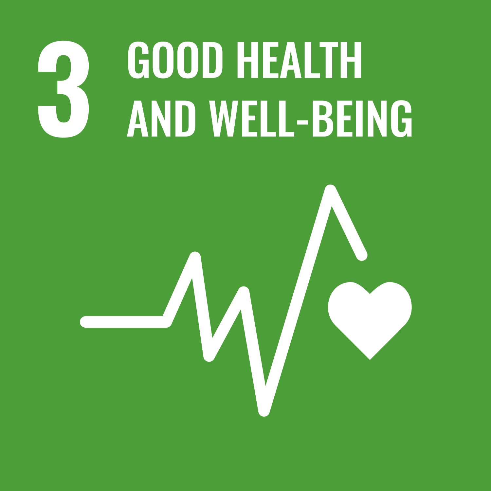
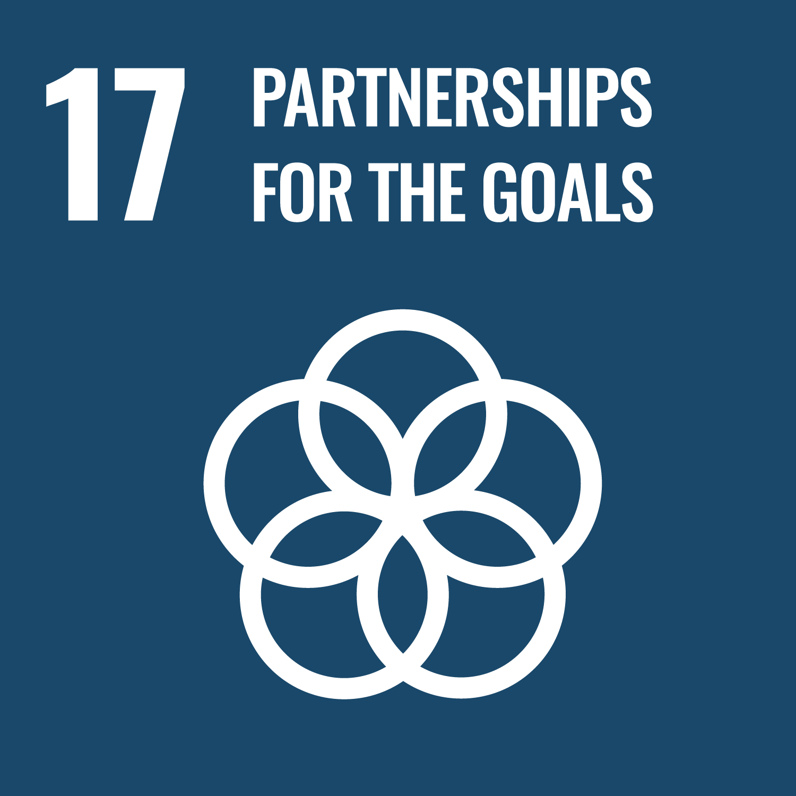

Our Governance Structure
Governance
Our Governance Structure





Roles and Responsibilities
Sustainability drives the way we work with our stakeholders in the communities we serve. The ArchSD has a sound governance system with long-term sustainability objectives and a mechanism for monitoring progress.
From driving development to conserving heritage, we are committed to addressing environmental challenges, providing safe and healthy workplaces, and enriching the well-being and cultural legacy of our communities.
Organisation Structure


Senior Staff Forum


Management plays a critical role in overseeing and implementing governance processes, controls and procedures. This includes monitoring key business activities, setting sustainability strategies and targets, and tracking progress to ensure effective outcomes.
Chaired by the Director, the Senior Staff Forum (SSF) is the highest governance body within ArchSD, responsible for setting ArchSDʼs strategic direction and policies...
Monitoring and Advisory Committee
Chaired by the Director, the Monitoring and Advisory Committee (MAC) supports the SSF by overseeing and coordinating the implementation of sustainability initiatives across the department. The MAC is supported by internal committees and working groups including the Integrated Management Committee and the Green Building Committee, which facilitate the integration of sustainability considerations into departmental operations and the implementation of sustainability-related initiatives. Its key responsibilities include:
To ensure that the MAC is equipped with the necessary skills and competencies to govern sustainability-related risks and opportunities, the MAC receives periodic briefings and training, where appropriate, on various sustainability-related topics, including climate change, green building, occupational health and safety, resource efficiency and other emerging issues relevant to the ArchSDʼs sustainability goals and operations.
The ArchSD balances sustainability objectives with practical considerations including cost and manpower availability. This involves evaluating trade-offs such as higher initial investments in energy-efficiency systems against their long-term benefits, or the operational requirements of sustainable practices against project timelines. Where limitations exist, the ArchSD implements scalable solutions that align with both financial parameters and environmental commitments.
Key committees and working groups across ArchSD that support the MAC in implementing and monitoring sustainability initiatives are outlined below.